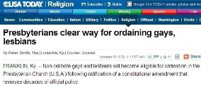

This page is totally taken from the website 'SIGNS OF THE END TIMES'. I am very much grateful to the authors/organisers of this website for permitting me to reproduce their content here.
I appreciate and praise the Lord for their efforts in spreading the Word of God.
Signs of the End of the World
The year is now 2018 and many people around the globe are wondering if the end of the world is near. I don't think there has ever been such a widespread interest in this topic like there is today. And who can blame people for wondering, when you see what is happening to our world. The signs of the end are prevalent. War, famine, natural disasters, incredible and rapid increase in knowledge. Poisoning of the air and water. Birds of the air and the Fish of the seas dying in huge numbers. These are just a few of the Biblical signs which you can see on our end time signs home page.
Scientific FACT that supports the Bible → → THIS WORLD IS DYING ← ←
The signs are so strong now and the evidence is so clear that any person willing to accept the truth can see that the end of the world, as we know it, is near.
→→ WHAT MUST I DO TO BE SAVED? ←←
Now the signs of the end that we are dealing with on this page are the signs we find within 2 Timothy 3:1-5 ...'This know also, that in the last days perilous times shall come. For men shall be lovers of their own selves, covetous, boasters, proud, blasphemers, disobedient to parents, unthankful, unholy, without natural affection, trucebreakers, false accusers, incontinent, fierce, despisers of those that are good, traitors, heady, highminded, lovers of pleasures more than lovers of God; Having a form of godliness, but denying the power thereof: from such turn away.'
These verses predicted a great moral degeneration in our society.
But before we get into these last day signs, take a look at this Bible verse also ... 2 Peter 3:3-4 ...'Knowing this first, that there shall come in the last days scoffers, walking after their own lusts, and saying, Where is the promise of his coming? for since the fathers fell asleep, all things continue as they were from the beginning of the creation.' ... Do we live in a day of scoffers? Most certainly! Talk about the end times and the majority of people, including many Christians will just laugh it off saying that "all things continue as they were from the beginning of the creation." in PERFECT fulfillment of this Bible prophecy above!
So lets look at just some of the signs from the above Bible verse in Timothy and apply it to our time and see if it tells us that we are living at the end of the world, just before the second coming of Jesus.
Remember, these signs are purely dealing with the moral decline in society. See our end time signs home page for more general Bible signs.
End of World Sign - PERILOUS TIMES
Are we living in perilous times? There is no doubt about that. Let's just take one example of what is happening today. There are uprisings all around the world, with people protesting and rioting and governments toppling. The people are starting to see the power they have if they get together. And this is a very dangerous situation and one that will lead to the image of the beast being formed, which will bring on the enforcement of the beast's mark. And with the economy melting all around the world, with countries nearing bankruptcy, the world is becoming ripe for a one world currency, which will aid with enforcing the mark and stop those who refuse the mark from "buying and selling" (Rev.13).
"2014 was a catastrophic year for millions caught up in violence." (source)
End of World Sign - LOVERS OF PLEASURE MORE THAN GOD
This sign of the end is powerful just on its own! Do we live in a world full of pleasure seekers? Most  certainly. Again, to
fulfill this end of world sign, we only need look at the professing Christian churches. A great majority of
professing Christians are lovers of pleasure more than they love God. They fill their lives with television, partying, socializing,
reading novels, playing games, wasting time on social networks like facebook, and God gets little of their time.
certainly. Again, to
fulfill this end of world sign, we only need look at the professing Christian churches. A great majority of
professing Christians are lovers of pleasure more than they love God. They fill their lives with television, partying, socializing,
reading novels, playing games, wasting time on social networks like facebook, and God gets little of their time.
The films, tv programs and music that professing Christians are happy to listen to today is just shocking! There is no distinction between your average Christian and a worldly person today. Should Christians listen to secular music and watch all the garbage that they do? No, not at all.
The programs and films that are watched by professed Christians today are an abomination to God
Now, go back 50 years or more and this would not be the problem it is today, because life was much simpler back then, without all the worldly entertainment. How many Christian homes give time to worship God as a family everyday? Not too many I guess, because they are too busy watching their favorite tv program, or reading their favorite novel, or playing their favorite games. We certainly live in a pleasure seeking world. This sign of the last days is fulfilled in our generation.
Men are still living as if nothing is going to happen. Pleasure lovers are still crowding into bars, theatres, gambling halls and sports arenas. The highest excitement prevails, and yet probation's hour is fast closing, and every case is about to be eternally decided. Satan sees that his time is short, and he's always at work that men may be deceived, deluded, occupied and entranced, until the day of probation shall be ended, and the door of mercy be forever shut.
End of World Sign - PEOPLE WILL BE COVETOUS
Well, we certainly live in a covetous age, where people clamour after the latest and best things. And not only do we covet possessions, we also covet after other men and women, whether married or not. The majority of people today are seeking after worldly riches, rather than eternal heavenly riches.
Again, this end of the world sign also applies to the churches of today. Just look at what the prosperity gospel is producing! Professing Christians just in it for earthly riches.
Also, think about how many women are coveted and lusted after everyday, because of the tight, revealing clothing they wear these days. And not just on the streets, but in the churches also! And again, the television, internet, magazines, billboards, etc, causes us to covet and clamour after the latest things this world has to offer. No doubt we live in a covetous time like no other.
End of World Sign - PEOPLE WILL BE BOASTERS AND PROUD
Pride was the original sin that caused Satan to fall from his exalted position in Heaven, and pride is the sin that the majority of people cherish in this world today. LOOK AT ME is the way people are today. Too proud to be humble before God and turn the other cheek to their fellow neighbour. Too proud to stop and help someone in need just in case others see them.
And as mentioned above, the way people dress these days compared to times past is amazing! Tight, trendy, revealing clothes to make people look at them and like them. Driving the latest cars and wanting to live in the nicest homes. LOOK AT ME, I've made it in this world!
End of World Sign - CHILDREN DISOBEDIENT TO PARENTS
Let me give you a quote from a newspaper in the UK after the riots there in August 2011 ...
"You have a generation of kids now that don't respect their parents or the police ... When we were youngsters we were made to have respect for the olders. Now if an older was to slap a youth that kid is going to pick up a hammer." (source)
This is one of the many signs of the end of the world, and it is pointing clearly to our generation. The youths of today go about in gangs having little respect for their elders and parents, and pretty much little respect for anything, which this business man in Detroit will tell you. And why is that? Because society today teaches them that there is no God. They have no idea what Christ Jesus has done for them, and therefore they do not have any future. So really, it's not surprising that they rebel!
End of World Sign - PEOPLE WILL BE UNTHANKFUL
Many of us are unthankful today because we have been so conditioned by the world to just take things for granted. Just have a think about your daily life. Are you really thankful to God for the many blessings He has bestowed upon you? Do you thank Him for waking you up in the morning? For feeding you? For providing you with a job and income? Do you thank Him for His wonderful creation? And most of all, do you thank God everyday for giving us His Son Christ Jesus? Do you contemplate that amazing sacrifice He made? Now if Christians are unthankful, then what are those outside the faith like? We certainly live in a time of ungreatfulness. Spare a thought for those who DON'T have today!
There will be some people reading this that have great troubles and difficulties in their lives. But you CAN be thankful. Thankful that God has promised us a future, if we believe in His Son Jesus Christ, and follow Him.
End of World Sign - PEOPLE WILL BE UNHOLY
Now this sign of the end of the world is an amazing one. Do you know why? Because I only need to talk about professing Christians here. Go back just 50 years and you would find a world with Christians who were far more holy and humble than they are today. Many believe that we need not keep the ten commandments anymore, just as long as we "believe" in Jesus. And what does this lead to? A people who continue living in sin and being unholy.
Jude 1:4 ...'For there are certain men crept in unawares, who were before of old ordained to this condemnation, ungodly men, turning the grace of our God into lasciviousness, and denying the only Lord God, and our Lord Jesus Christ.'
These men have certainly crept into the churches and as a result the churches are full of unconverted, unholy people today, who have turned the grace of God into a licence to sin! Much more so today than in times past. Churches today have become more like social places, theatres and concerts, rather than holy places of worship. Christians have lost the Bible truth about how to worship in Church.
Christians seem to think that they will be saved IN their sins, rather than Jesus saving them FROM their sins. There is little effort today being made in turning away from sin and living a holy life for God. And if this is the state of the majority of Christians, then what is the rest of the world like? Yes, this end of the world sign is being fulfilled today. We are sure living in the last days.
End of World Sign - PEOPLE WITHOUT NATURAL AFFECTION
Another great sign of the end of the world! Just look at how homosexuality is being pushed and accepted around the world today. The picture on the right is just one of the many articles from the news today, showing that homosexuality is becoming the "norm". And not just in the world, but in the churches too!
We are also now seeing churches accept ACTIVE homosexuals. And not only that, many churches are now placing these people in leadership positions! Homosexuality is being pushed through television also, with many programs portraying homosexuality as normal. This is all in complete disobedience to God's clear Word ... 1 Corinthians 6:9-10 ...'Do you not know that the unrighteous will not inherit the kingdom of God? Do not be deceived. Neither fornicators, nor idolaters, nor adulterers, nor homosexuals, nor sodomites, nor thieves, nor covetous, nor drunkards, nor revilers, nor extortioners will inherit the kingdom of God.'
So many signs showing we are IN the last days!
End of World Sign - DESPISERS OF THOSE THAT ARE GOOD
We live in an age today where people will not take correction or rebuke for their sins. If you warn Christians for wrong doing, many of them will just say "stop judging me!" and will not take correction. Even though the Bible says that the Word of God is to be used for instruction, correction and rebuke.
2 Timothy 3:16 ...'All scripture is given by inspiration of God, and is profitable for doctrine, for reproof, for correction, for instruction in righteousness.'
This day and age, people are CRITICIZED for being pious. If you are seen to be a good, holy person, then the world will sneer at you, being labelled as a "goody two shoes". The world is so full of sin today that it cannot handle people who are good. This Bible sign is applicable more for our day than any other before us, and shows we are living in the last days.
End of World Sign - PEOPLE WILL BE LOVERS OF THEMSELVES
You will now see how Paul above in 2 Timothy is talking about our day. These signs of the last days are so clearly speaking about our generation. Do people love themselves today by putting themselves before God and other people? Most certainly. We seem to be more concerned about how we look on the outside, rather than how we look on the inside (our heart). Everything now is commercialized to the extreme to make people think about ME, ME, ME!. If you walked down the street just 50 years ago, you would have seen the majority of people dressed modestly in smart, humble clothing, covering their bodies. Today if you do the same you will see the majority of people dressed in tight revealing clothing to make themselves look "sexy".
Today, the television, radio, newspapers, magazines and internet are full of adverts to try and lure us into buying the next best thing, to make us look better than the next person. Yes, this is certainly a sign for the time we live in. And what makes this sign appropriate more for our day is the fact that it applies to the majority of professing Christians also! The church is full of people who have no idea what it truly means to worship God, and think more of themselves than they do of God and other people. Just look at America! The majority of people there profess to be Christian. So why is it that there are thousands of people starving to death everyday? Because professing Christians are too busy with themselves to worry about the needy. And Satan has deceived the majority of professing Christians into thinking it is ok to spend the money that God has entrusted them with on THEMSELVES, rather than using it to help the poor and further God's kingdom.
End of World Sign - A "FORM" OF GODLINESS ONLY
Now this is an end time sign pointing purely to Christians. And is it fulfilled in our day? Yes. The Christian churches are FULL of people who only have a "form" of Godliness. How many Christians actually LIVE the faith that they proclaim? How many LIVE according to the way laid out in the Bible? Not many, which is why Jesus said ... "will I find faith when I return?" (Luke 18:8). And which is why He said that only "few" would find the narrow way, as the majority will head down the broad way to destruction. Why? Because they loved the world more than they loved God!
Yes, there may be "revivals" going on around the world today. But many of them only have that "form" of Godliness and are not filled with the true Spirit of God. Anyone can rent a stadium. Put on an elaborate "Christian" rock band on stage. Say "nice" things to make people feel good. Draw many people through the doors and call it "revival". But do you know what TRUE revival is? Turning away from sin and living holy lives for God. The so called revivals happening today are nothing more than worldly excitement.
Are we Living in the Last Days?
There is no doubt whatsoever, that the signs of the end of the world in the Bible are pointing to our generation. Anyone can see the great moral degeneration that has happened over the past 50+ years. The moral depravation of this world has reached such a point that we are now like Sodom and Gomorrha just before God destroyed that city with fire ... 2 Peter 2:6 ...'And turning the cities of Sodom and Gomorrha into ashes, condemned them with an overthrow, making them an example unto those that after should live ungodly.'
So is the world going to end in the next couple of years? We cannot set dates, but from all the signs, we can know that the second coming is 'at the door'. There are still some things yet to happen that end time prophecy reveals, like the mark of the beast being enforced. And once the mark of the beast is enforced, we will know that we are in the VERY last days, right at the end of the world. But please do not wait until that happens to get ready. We need to get ready now and live for Christ Jesus and the Kingdom of Heaven every day.
Don't forget, none of us know when OUR last day will be. So we need to be ready everyday. Satan's deceptions and temptations are going to get stronger and stronger. So please seek the truth of God's Word in the Bible and start living for Christ Jesus.
→→ WHAT MUST I DO TO BE SAVED? ←←
Take a look at 2 Timothy 3 above again. EVERY sign that is given in those verses are specifically pointing to our day today. These are the signs showing that the end of the world is near. We ARE living in the last days, there can be no doubt.
For great truths concerning the end times and Bible prophecy, please see our prophecy site: www.end-times-prophecy.org.Go Top